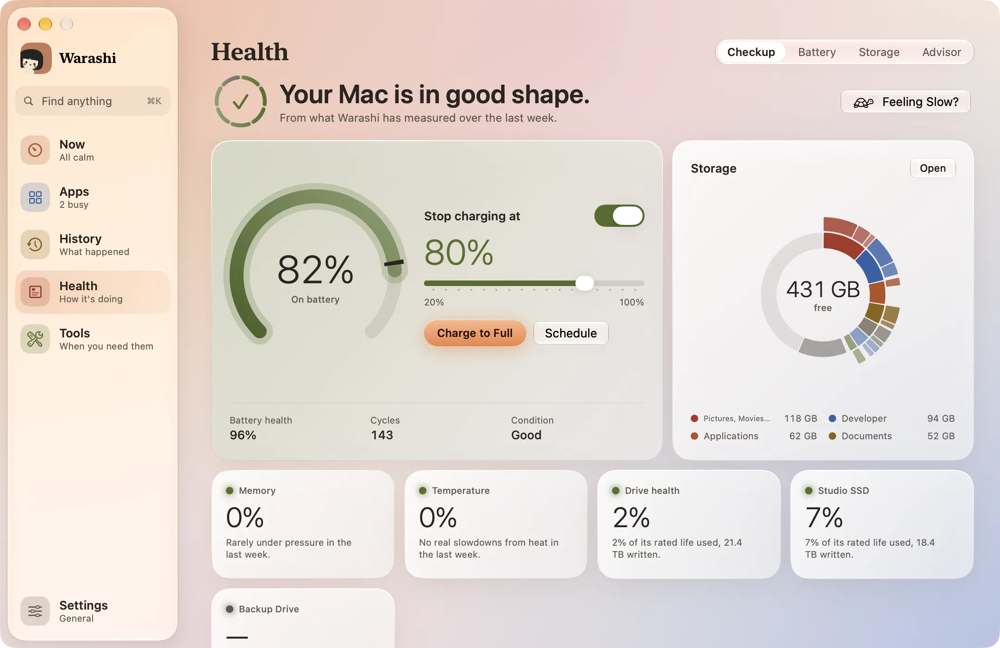
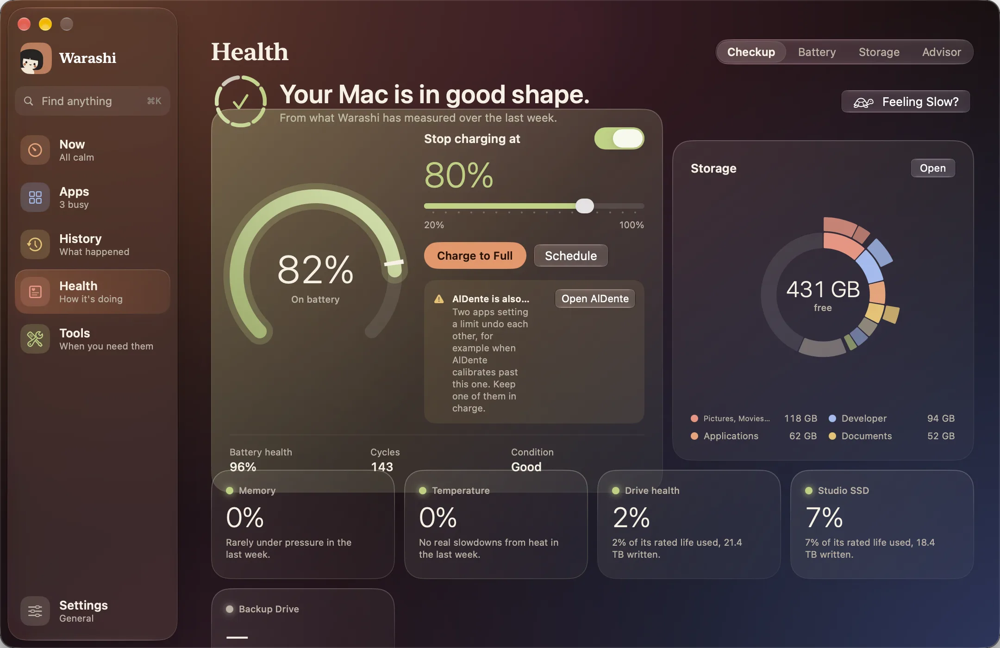
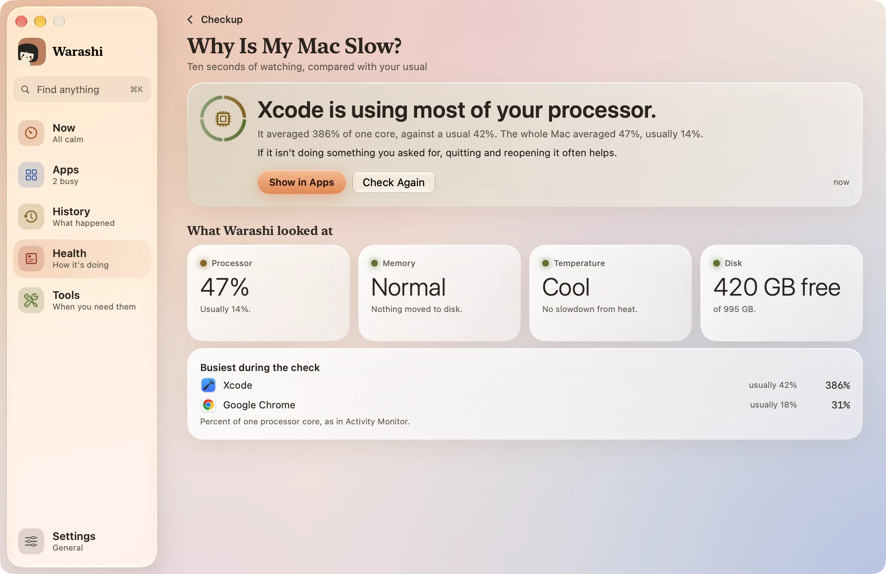
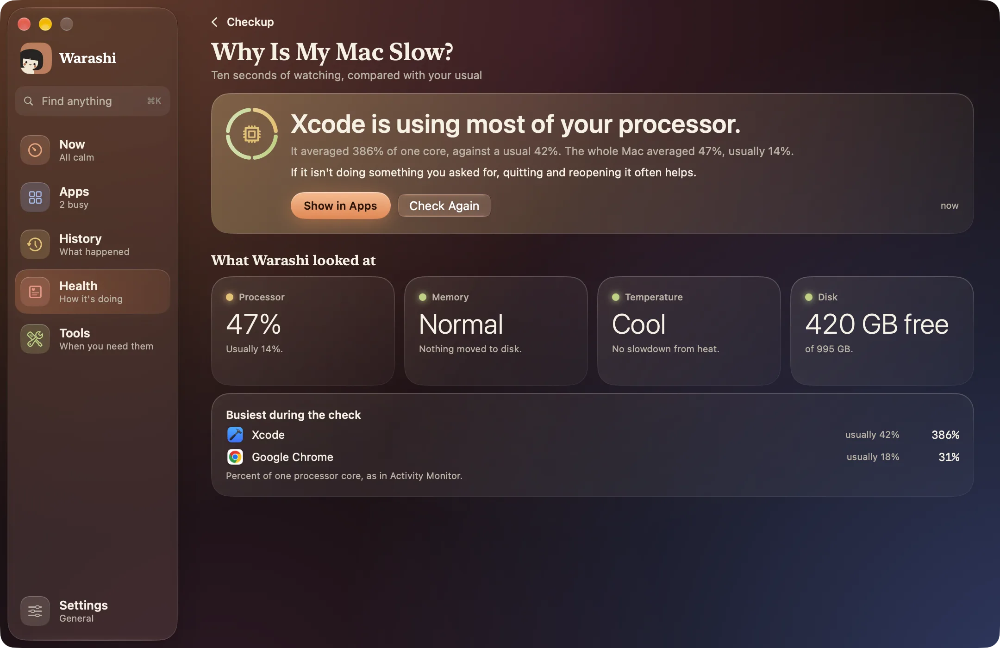
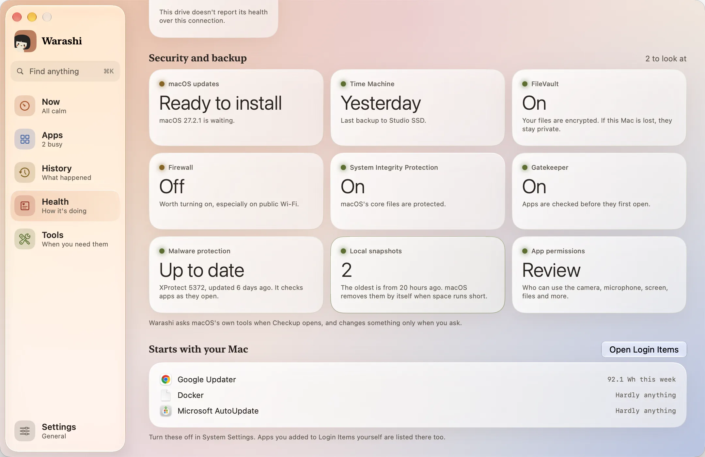
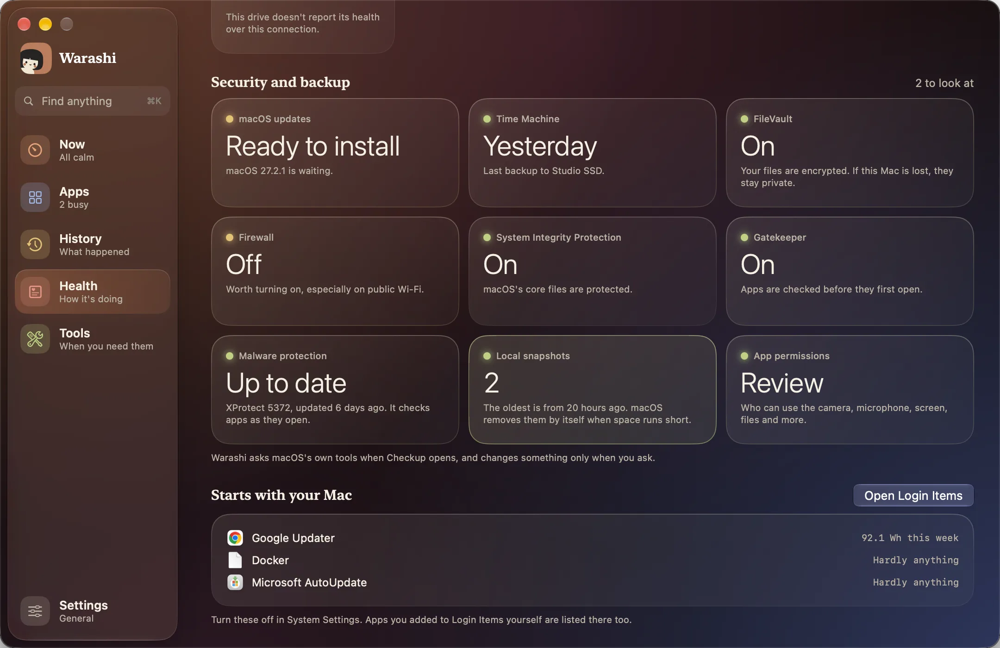

Bilan est le premier onglet d’État (⌘4). Il examine la semaine passée et répond à une question : votre Mac est-il en bonne forme ?


Le verdict
En haut : Votre Mac est en pleine forme., ou ce qu’il faut regarder, en mots simples. À côté, un anneau avec un segment pour chaque point vérifié, chacun de sa couleur : vert quand tout va bien, ambre quand cela mérite un coup d’œil, gris quand il est illisible. Il est calculé d’après ce que Warashi a mesuré durant la dernière semaine, et se met à jour toutes les quelques minutes.
Ce qu’il examine
| Carte | Ce qu’elle affiche | Quand elle vous invite à regarder au loin |
|---|---|---|
| Batterie | Charge, état, cycles et condition, avec la limite de charge juste à côté | État inférieur à 85 % ; agir sous 80 % |
| Stockage | L’espace libre et ce qui remplit votre disque, d’après votre dernière analyse du Stockage | Moins de 15 % libres ; agir sous 10 Go |
| Mémoire | La part de la semaine où votre Mac a manqué de mémoire | Un tiers de la semaine ou plus |
| Température | La part de la semaine où macOS a ralenti votre Mac pour le refroidir | 2 % de la semaine ou plus |
| État du disque | La part de la durée de vie nominale de votre SSD déjà utilisée | 70 % ou plus, ou des erreurs |
| Disques externes | La même chose pour chaque disque connecté qui indique son état | 70 % ou plus, ou des erreurs |
Appuyez sur Mémoire pour voir les apps en cause, sur Température pour son historique, ou sur Ouvrir dans Stockage.
Pourquoi mon Mac est-il lent ?
La semaine peut sembler correcte alors que le Mac paraît lent maintenant. Appuyez sur Un Mac lent ? à côté du verdict, ou saisissez « slow » dans Rechercher, puis continuez ce qui semblait lent. Warashi observe pendant dix secondes, compare ce qu’il voit à la semaine habituelle de votre Mac et nomme la cause la plus probable, avec ses chiffres et une chose à faire :
- La chaleur : macOS ralentit votre Mac pour le refroidir.
- La mémoire : votre Mac manque de mémoire et la déplace sur le disque, avec les apps qui en occupent le plus.
- Une seule app : une app utilise la plus grande partie du processeur, par rapport à son niveau habituel. Afficher dans Apps l’ouvre.
- Le travail de macOS lui-même : l’indexation Spotlight, une sauvegarde Time Machine, Photos qui analyse votre photothèque ou une mise à jour en préparation. Tout cela se termine tout seul.
- Beaucoup d’apps à la fois, un disque presque plein ou le Mode économie d’énergie.
- Rien de particulier : si rien ne ressort, Warashi le dit, chiffres à l’appui. Un site web lent vient plus probablement de votre connexion, alors il propose un test de débit.


Sous la réponse, Ce que Warashi a examiné montre le processeur, la mémoire, la température et le disque, ainsi que les apps les plus actives pendant la vérification. Rien n’est enregistré en dehors de votre historique habituel.
Sécurité et sauvegarde
Neuf cartes montrent à quel point votre Mac est protégé. Appuyez sur l’une d’elles pour ouvrir l’endroit de Réglages Système où ça se change.


| Tuile | Ce qu’elle affiche | Quand elle vous invite à regarder au loin |
|---|---|---|
| Mises à jour de macOS | Si une mise à jour de macOS est en attente, et quand macOS a vérifié pour la dernière fois | Une mise à jour est prête à installer |
| Time Machine | Quand votre Mac a été sauvegardé pour la dernière fois, et sur quel disque | Non configurée, ou aucune sauvegarde depuis une semaine |
| FileVault | Si vos fichiers sont chiffrés | Désactivé |
| Pare-feu | Si les connexions entrantes indésirables sont bloquées | Désactivé |
| Protection de l’intégrité du système | Si les fichiers essentiels de macOS sont protégés | Désactivé |
| Gatekeeper | Si les apps sont vérifiées avant leur première ouverture | Désactivé |
| Protection contre les logiciels malveillants | XProtect, la protection contre les logiciels malveillants intégrée à macOS : la version de ses définitions et quand Apple les a mises à jour. Appuyez dessus, puis sur Vérifier les apps, pour vérifier la signature de chaque app et élément d’ouverture : tout ce qu’aucun développeur identifié n’a signé, ou qui a été modifié après signature, est listé avec la marche à suivre | Aucune mise à jour depuis un mois : les réponses de sécurité n’atteignent pas ce Mac |
| Instantanés locaux | Combien de copies Time Machine garde sur le disque lui-même, et la plus ancienne. macOS les supprime de lui-même quand l’espace manque ; appuyez dessus, puis sur Libérer de l’espace, pour que macOS les supprime tout de suite. Votre disque de sauvegarde n’est pas touché | Jamais : c’est normal |
| Autorisations des apps | La liste des pages de confidentialité de Réglages Système (caméra, micro, enregistrement de l’écran, Accès complet au disque et plus), chacune à un clic | Jamais : c’est un guide |
Warashi interroge les outils de macOS à l’ouverture de Bilan, et ne change rien sans que vous le demandiez. Voir la date de la dernière sauvegarde nécessite l’Accès complet au disque.
Pour être prévenu sans ouvrir Bilan, activez Sauvegarde en retard et Mise à jour de macOS en attente dans Réglages › Alertes. Tant que l’une est active, Warashi les lit une fois par jour et vous prévient une fois : quand Time Machine n’a pas sauvegardé depuis une semaine, et quand une mise à jour attend depuis une semaine.
Démarre avec votre Mac
En dessous, tout ce qui s’est installé pour démarrer avec votre Mac, du plus coûteux au moins coûteux, avec l’énergie utilisée par chacun cette semaine. Ouvrir Ouverture et extensions vous mène à Réglages Système pour désactiver ce que vous voulez.